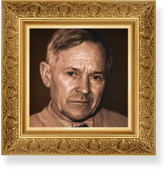
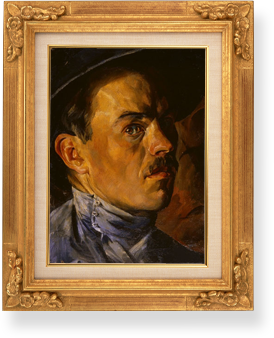
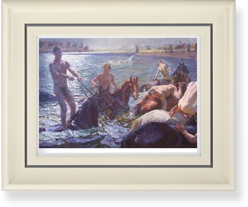
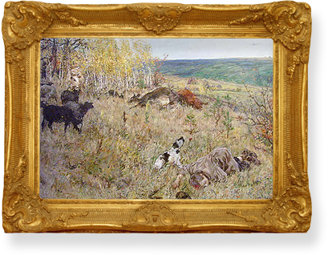

биография. Аркадий Александрович Пластов (1893-1972)
Аркадий Александрович Пластов – великий художник крестьянской России. Она смотрит на нас с его картин и портретов и останется в вечности такой, какой изобразил ее художник. Лучшие его картины стали классикой русской живописи XX в.
Искренность, полное отсутствие того, что называют "манерой", отличает его даже от тех замечательных мастеров, наследником живописных принципов которых он был, – А. Е. Архипова, Ф. А Малявина, К. А. Коровина. Пластов - продолжатель всей национальной художественной традиции.
-
1893
А.А. Пластов родился 19(31) января 1893г. в селе Прислониха Симбирской губернии в крестьянской семье. Дед художника был местным иконописцем. С юности мальчик мечтал стать живописцем.
-
1912-
1914Окончив духовное училище и семинарию, с 1912-1914 учился в московском Строгановском центральном художественно-промышленном училище, а с 1914-17 на скульптурном отделении Московского училища живописи, ваяния и зодчества у С. М. Волнухина.
-
1917-
1925В 1917-1925 годах Пластов вернулся в родное село, где начал заниматься живописью, постоянно работая с натуры. Параллельно занимался различными общественными делами.
Автопортрет. конец 10-х - нач. 20-х.
-
1920-е
1930-еВ 1920-х - начале 1930-х гг. работал главным образом над политическими плакатами и иллюстрациями к произведениям русских писателей.
-
1931
В 1931 году в сорокалетнем возрасте А.А. Пластов оказывается практически в положении начинающего. Из-за пожара в его собственном доме погибает почти все созданное к тому времени. Но еще сорок лет неустанного труда - и число его произведений приблизилось к 10 000. Одних портретов - несколько сотен. В основном это портреты односельчан.
-
1935
С 1935 года Пластов писал преимущественно жанровые картины, проникнутые глубоким знанием и поэтическим восприятием природы, жизни русской современной деревни и её людей. Пластов - природного реалиста. Он жил в мире и любовался его красотой. Как и многие русские художники-реалисты, Пластов убежден: главное для художника - увидеть эту красоту и быть предельно искренним. Не надо писать красиво, надо писать правду, и она будет прекраснее любых фантазий.
-
1938
В 1938 году, к юбилейной выставке «XX лет Российской Красной Армии» Пластов пишет картину «Купание коней». Еще юношей в деревне художник часто любовался блеском солнца на мокрых спинах купающихся коней, светлой рябью на воде, контрастом обнаженных тел людей с темной шерстью животных.
Купание коней. 1938г.Это и решил передать художник, когда получил заказ на создание картины. В радужном море брызг входят в воду стройные красивые лошади. На каждой из них стоят, держась за поводья, или сидят верхом солдаты. Пластов отлично чувствует форму, он пишет фигуры почти скульптурно: не прошли даром его занятия скульптурой. Искусство Пластова, реалистичное, жизнерадостное, вселяет в зрителей мощь и силу, исходящую от его картин. В эскизе к картине «Купание коней», других работах, посвящённых жизни села, этюдах с изображением лошадей ярко и зримо отражается роль этого благородного животного в жизни крестьян.
Художник много и плодотворно работает в 1930-х гг., но первые свои шедевры он создает в военные годы. В то время художник жил и работал на родине в селе Прислониха. В своих работах он отражал испытания советского народа в годы Великой Отечественной войны ("Фашист пролетел", 1942г.), патриотический труд женщин, стариков и детей на колхозных полях в военные годы ("Жатва, "Сенокос", 1945г.).
 Картина "Сенокос" прозвучала как красочный гимн наступившей мирной жизни, радости народа, с честью и славой вышедшего из тяжелых испытаний войны. В картине "Жатва" – тема войны скрыта, она – в отсутствии отцов и старших братьев детей, сидящих рядом с пожилым крестьянином. Ее торжество в сиянии солнечных лучей, буйстве трав и цветов, шири русского пейзажа, простой и вечной радости труда на родной земле. В 1946г. обе картины удостоены Сталинской премии.
Картина "Сенокос" прозвучала как красочный гимн наступившей мирной жизни, радости народа, с честью и славой вышедшего из тяжелых испытаний войны. В картине "Жатва" – тема войны скрыта, она – в отсутствии отцов и старших братьев детей, сидящих рядом с пожилым крестьянином. Ее торжество в сиянии солнечных лучей, буйстве трав и цветов, шири русского пейзажа, простой и вечной радости труда на родной земле. В 1946г. обе картины удостоены Сталинской премии.
 Полотно Пластова "Фашист пролетел" (1942) – одно из наиболее тревожащих и незабываемых произведений живописи. Русская осень с золотым убором опадающей листвы, с увяданием зелени на полях и фигурой погибшего мальчика-пастушка на первом плане несет на себе следы бессмысленной военной жестокости. У горизонта чуть виден силуэт улетающего немецкого самолета-убийцы.
Впоследствии в лучших своих работах Пластов удержал достигнутый уровень: "Родник" (1952), "Юность" (1953-54), "Весна" (1954), "Лето" (1959-60), "Ужин трактористов" (1951).
Аркадию Александровичу дана редкая способность события реальной жизни, часто самые обыденные, превращать в идеальный образ, как бы открывать их сокровенный, подлинный смысл и значение в общей системе устройства мироздания. Поэтому он, современный русский реалист, так естественно продолжил классическую художественную традицию.
-
1960
В 1960г. Аркадий Пластов публикует две свои статьи «От этюда к картине» и «Письма» в сборнике"Художник и современность".
Яркость и эмоциональность замысла отличают работы Пластова в области иллюстрации Они очень близки по мировосприятию его картинам. В 1948-1949гг. иллюстрации к рассказам Н.А. Некрасова ("Мороз, Красный нос") и А.С. Пушкина ("Капитанская дочка"). В 1953г. к произведениям Л.Н. Толстого ("Холстомер"), в 1954г. к рассказам А.П. Чехова.
А.А. Пластов – советский живописец, народный художник СССР. Пленэрные жанровые картины и пейзажи, портреты Пластова проникнуты поэтическим восприятием природы, жизнь русской деревни и ее людей. Его работам свойственна непринуждённая простота композиции с расположением крупных фигур обычно на первом плане и мажорная яркость тёплых красок.
-
1972
А.А. Пластов умер 12 мая 1972 года в родном селе Прислониха.